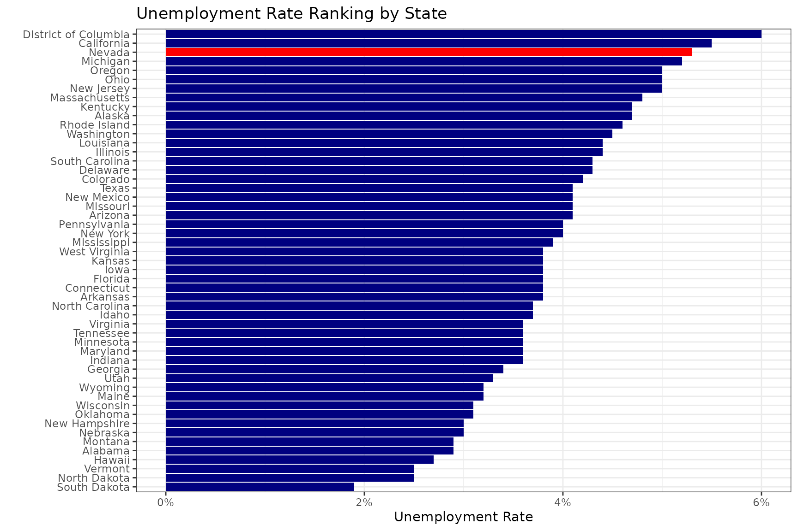
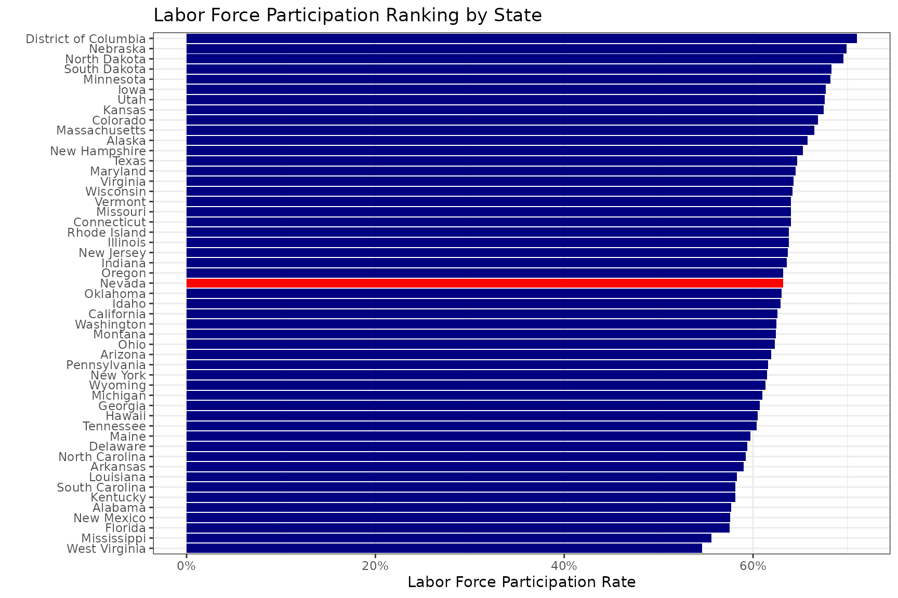
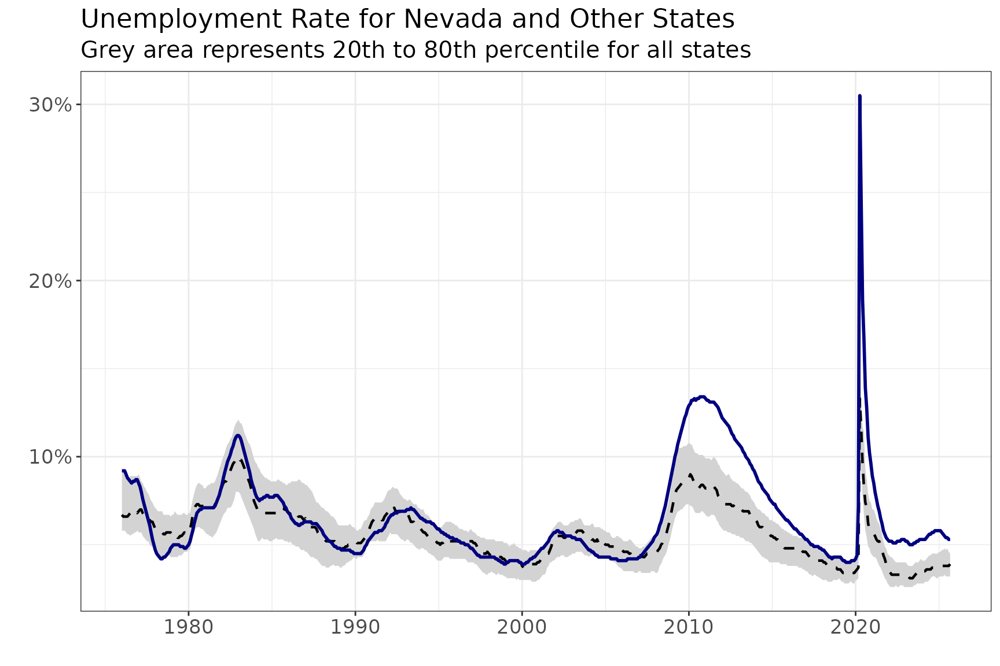
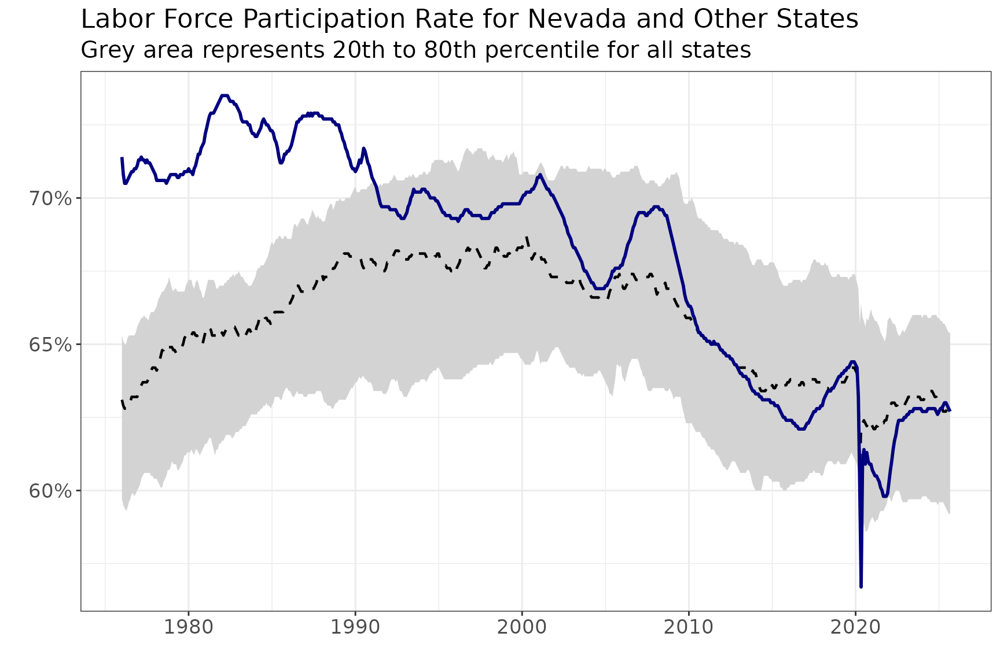

Working with LAUS Data
using_get_laus.RmdGeneral Concepts
BLSloadR streamlines access to data from the U.S. Bureau
of Labor Statistics. Its primary benefit is in providing data in a handy
form so that it can be manipulated and used to compare data across
areas, periods, and data types. One simple example includes using the
data across areas to calculate percentiles for a particular data element
to compare a single state to the range of experiences across other
states.
Step 1: Accessing the Data
Accessing data from the BLS is simple. Here, we can use
get_laus() to pull up the Local Area Unemployment
Statistics (LAUS) data. By default, this will pull seasonally-adjusted
data at the statewide level.
# Get the LAUS data using BLSloadR
bls_import <- get_laus()
head(bls_import,10)
#> series_id year period value area_type_code area_code
#> <char> <char> <char> <num> <char> <char>
#> 1: LASST010000000000003 1976 M01 0.067 A ST0100000000000
#> 2: LASST010000000000003 1976 M02 0.066 A ST0100000000000
#> 3: LASST010000000000003 1976 M03 0.066 A ST0100000000000
#> 4: LASST010000000000003 1976 M04 0.065 A ST0100000000000
#> 5: LASST010000000000003 1976 M05 0.064 A ST0100000000000
#> 6: LASST010000000000003 1976 M06 0.065 A ST0100000000000
#> 7: LASST010000000000003 1976 M07 0.065 A ST0100000000000
#> 8: LASST010000000000003 1976 M08 0.067 A ST0100000000000
#> 9: LASST010000000000003 1976 M09 0.068 A ST0100000000000
#> 10: LASST010000000000003 1976 M10 0.069 A ST0100000000000
#> measure_code seasonal srd_code area_text measure_text date
#> <char> <char> <char> <char> <char> <Date>
#> 1: 03 S 01 Alabama unemployment rate 1976-01-01
#> 2: 03 S 01 Alabama unemployment rate 1976-02-01
#> 3: 03 S 01 Alabama unemployment rate 1976-03-01
#> 4: 03 S 01 Alabama unemployment rate 1976-04-01
#> 5: 03 S 01 Alabama unemployment rate 1976-05-01
#> 6: 03 S 01 Alabama unemployment rate 1976-06-01
#> 7: 03 S 01 Alabama unemployment rate 1976-07-01
#> 8: 03 S 01 Alabama unemployment rate 1976-08-01
#> 9: 03 S 01 Alabama unemployment rate 1976-09-01
#> 10: 03 S 01 Alabama unemployment rate 1976-10-01Here we can see that while we have a series of data, it has a number of columns that do not do us much good. In order to pivot and compare the data easily, we need to drop items like the series_id to ensure that we do not have too many identifiers in the series.
Step 2: Renaming, Filtering, and Narrowing the Table
Next, we will rename some columns, select only those that clarify the values we need, and assign R-friendly column names to the data to make it easier to work with. This will allow us to pivot the data, allowing for easier manipulation of the columns.
bls_state_table <- bls_import |>
rename("state" = "area_text",
"measure" = "measure_text") |>
filter(state != "Puerto Rico") |>
select(date, state, measure, value) |>
pivot_wider(names_from = measure, values_from = value) |>
rename("ur" = "unemployment rate",
"unemployment" = "unemployment",
"employment" = "employment",
"labor_force" = "labor force",
"epr" = "employment-population ratio",
"lfpr" = "labor force participation rate")
head(bls_state_table,10)
#> # A tibble: 10 × 8
#> date state ur unemployment employment labor_force epr lfpr
#> <date> <chr> <dbl> <dbl> <dbl> <dbl> <dbl> <dbl>
#> 1 1976-01-01 Alabama 0.067 98903 1387606 1486509 0.533 0.571
#> 2 1976-02-01 Alabama 0.066 98677 1387267 1485944 0.532 0.569
#> 3 1976-03-01 Alabama 0.066 97869 1388303 1486172 0.531 0.568
#> 4 1976-04-01 Alabama 0.065 96761 1392012 1488773 0.531 0.568
#> 5 1976-05-01 Alabama 0.064 96242 1396244 1492486 0.532 0.568
#> 6 1976-06-01 Alabama 0.065 96744 1400036 1496780 0.532 0.569
#> 7 1976-07-01 Alabama 0.065 98225 1402922 1501147 0.532 0.569
#> 8 1976-08-01 Alabama 0.067 100273 1405216 1505489 0.532 0.57
#> 9 1976-09-01 Alabama 0.068 102302 1407784 1510086 0.532 0.571
#> 10 1976-10-01 Alabama 0.069 104185 1410640 1514825 0.532 0.572Step 3: Calculating Summary Statistics
Because we have access to the full time series for all states, we can move away from comparing a single state to only the national trend. Instead, we can compare state-to-state, which allows for more nuanced context showing how common or uncommon a single state’s experience is across the nation. Here, we calculate the 20th, 50th (median), and 80th percentiles.
bls_state_table <- bls_state_table |>
pivot_longer(3:8, names_to = "measure", values_to = "value") |>
group_by(date, measure) |>
mutate(
pct_20 = quantile(value, 0.2, na.rm = TRUE),
pct_80 = quantile(value, 0.8, na.rm = TRUE),
median = median(value, na.rm = TRUE)
) |>
ungroup()
head(bls_state_table,10)
#> # A tibble: 10 × 7
#> date state measure value pct_20 pct_80 median
#> <date> <chr> <chr> <dbl> <dbl> <dbl> <dbl>
#> 1 1976-01-01 Alabama ur 0.067 0.058 0.092 6.7 e-2
#> 2 1976-01-01 Alabama unemployment 98903 29410 187753 9.50e+4
#> 3 1976-01-01 Alabama employment 1387606 364957 2426320 1.20e+6
#> 4 1976-01-01 Alabama labor_force 1486509 390460 2595504 1.30e+6
#> 5 1976-01-01 Alabama epr 0.533 0.554 0.618 5.84e-1
#> 6 1976-01-01 Alabama lfpr 0.571 0.597 0.653 6.31e-1
#> 7 1976-02-01 Alabama ur 0.066 0.058 0.092 6.6 e-2
#> 8 1976-02-01 Alabama unemployment 98677 29414 187838 9.50e+4
#> 9 1976-02-01 Alabama employment 1387267 364611 2425263 1.20e+6
#> 10 1976-02-01 Alabama labor_force 1485944 390099 2594800 1.30e+6Step 4: Narrowing the Data for Display
Since we now have comparative measures across the states, we can start looking at what we want to compare. Here, we will look at four options: a national ranking of the current Unemployment Rate and the current Labor Force Participation Rate, and a comparison of the trend for a single state to the range of experiences for other states over time for each of those measures. We will also add a column to highlight Nevada, the state we are interested in highlighting.
selected_state <- "Nevada"
bls_current <- bls_state_table |>
filter(date == max(date)) |>
mutate(is_st = if_else(state == selected_state, TRUE, FALSE))
bls_ts <- bls_state_table |>
filter(state == selected_state)Unemployment Rate Chart
bls_current |>
filter(measure == "ur") |>
ggplot() +
geom_col(aes(x = value, y = reorder(state, value), fill = is_st)) +
scale_fill_manual(values = c("navy","red")) +
scale_x_continuous(labels = scales::percent) +
labs(x = "Unemployment Rate", y = "", title = "Unemployment Rate Ranking by State") +
theme_bw() +
theme(legend.position = "none")
Labor Force Participation Rate Chart
bls_current |>
filter(measure == "lfpr") |>
ggplot() +
geom_col(aes(x = value, y = reorder(state, value), fill = is_st)) +
scale_fill_manual(values = c("navy","red")) +
scale_x_continuous(labels = scales::percent) +
labs(x = "Labor Force Participation Rate", y = "", title = "Labor Force Participation Ranking by State") +
theme_bw() +
theme(legend.position = "none")
Unemployment Rate Over Time
bls_ts |>
filter(measure == "ur") |>
ggplot(aes(x = date)) +
geom_ribbon(aes(ymin = pct_20, ymax = pct_80), fill = "lightgrey") +
geom_line(aes(y = median), color = "black", linetype = "dashed", linewidth = 0.8) +
geom_line(aes(y = value), color = "navy", linewidth = 1) +
labs(title = "Unemployment Rate for Nevada and Other States",
subtitle = "Grey area represents 20th to 80th percentile for all states",
y = "", x = "") +
scale_y_continuous(labels = scales::percent_format(accuracy = 1)) +
theme_bw() +
theme(
axis.text = element_text(size = 13),
plot.title = element_text(size = 17),
plot.subtitle = element_text(size = 15)
)
Labor Force Participation Rate Over Time
bls_ts |>
filter(measure == "lfpr") |>
ggplot(aes(x = date)) +
geom_ribbon(aes(ymin = pct_20, ymax = pct_80), fill = "lightgrey") +
geom_line(aes(y = median), color = "black", linetype = "dashed", linewidth = 0.8) +
geom_line(aes(y = value), color = "navy", linewidth = 1) +
labs(title = "Labor Force Participation Rate for Nevada and Other States",
subtitle = "Grey area represents 20th to 80th percentile for all states",
y = "", x = "") +
scale_y_continuous(labels = scales::percent_format(accuracy = 1)) +
theme_bw() +
theme(
axis.text = element_text(size = 13),
plot.title = element_text(size = 17),
plot.subtitle = element_text(size = 15)
)